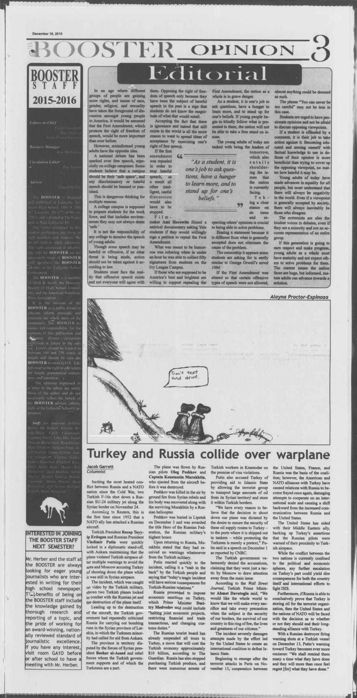

HN-949 · December 18, 2015 · Politics, Government & Diplomacy > Diplomacy, Treaties & International Relations > Diplomatic crises
Dec2015 Russia claimed Turkish leadership benefited from ISIS oil; Turkey denied and traded counter-accusations; US officials skeptical.
Source: Jefferson Booster, p. 3 — original international-affairs commentary.
Report: A student discussion of the November Turkey–Russia aircraft crisis considers Moscow's accusation that Turkish interests supported ISIS oil trade and explicitly phrases consequences as dependent on whether Russia could prove the claim.
Assessment: A diplomatic accusation and speculative scenario, not an independently established NATO member-state conspiracy. Proof of specific transactions or officials' culpability would require trade, intelligence and judicial records, not a newspaper's conditional argument.
Class: Competing accounts (P)
Recorded difference/concern: Dec2015 Russia claimed Turkish leadership benefited from ISIS oil; Turkey denied and traded counter-accusations; US officials skeptical.
Assessment: Washington Post and LA Times same-day A; accusation not established.
Source links: https://www.latimes.com/world/europe/la-fg-russia-turkey-islamic-state-20151202-story.html https://www.washingtonpost.com/news/worldviews/wp/2015/12/02/russia-and-turkey-accuse-each-other-of-buying-oil-from-the-islamic-state/
Authentic images retrieved from Hoosier State Chronicles (Indiana State Library). Article crops are located using the archive's own OCR word coordinates and rendered at native crop resolution; article clips are assembled from the archive's own article-block images; page images marked "archive tiles" are stitched from the archive's own tiled page service at its 256-px tile cap; page images marked "issue PDF" are single pages rasterised from the archive's own issue PDF, with the page chosen by matching the headline against the PDF's text layer; page scans are reduced-size access renditions. No images were generated, mocked, or retouched.

Status: Archive images acquired
Authentic archive-owned image renditions were retrieved for this record and are displayed above. The source-acquisition manifest preserves the original pre-acquisition feasibility assessment.
URL (preserved verbatim): https://newspapers.library.in.gov/?a=d&d=JFBSTR20151218.1.3
Saved research report: Historical_Newspaper_Event_Research_928-952_2026-10-23.md
Evidence note: A newspaper report means a historical publication made a claim; it does not establish that claim as fact. Contemporary reporting is separated from later scholarly context and our own assessment.